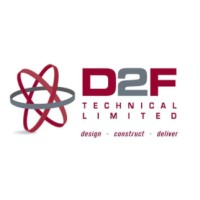
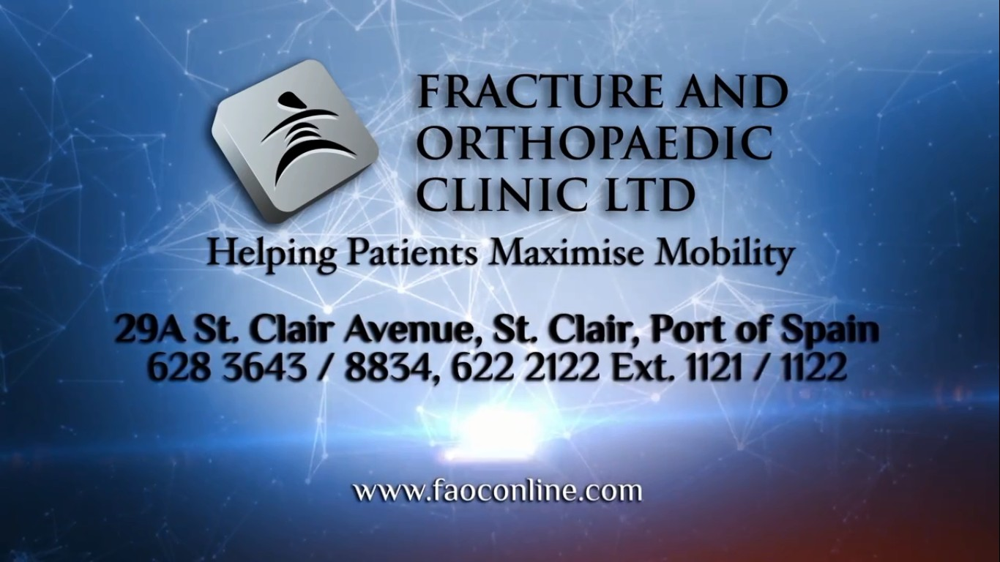
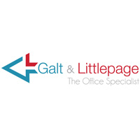

Mark Correia IT Consulting - About Us
For many years, Mark Correia IT Consulting has been a reliable partner for businesses looking for high-quality IT services. He has constantly provided solutions that are customized to fit the specific needs of each of his clients. His commitment lies in assisting businesses to prosper in the constantly changing technological landscape, through hardware services to the preparation of system requirements and designs.
Mark Correia - Business Owner
Mark Correia has worked as a freelance IT consultant for more than fifteen years. He has worked with a wide range of clients over the course of his career, including businesses such as D2F Technical Limited, The Fracture and Orthopaedic Clinic, and Galt and Littlepage Limited. A wide range of IT services are covered by Mark’s expertise, including hardware services, software acquisitions, hardware and software support, preparing system requirements and system design for new systems, and doing system and application implementations. Mark is known for his dependability because of his dedication to quality work and client satisfaction. He is an invaluable asset to any company looking to improve its IT capabilities because of his skill set and commitment to staying up to date with emerging technologies.
List of Clients
D2F Limited
The Fracture and Orthopaedic Clinic
Galt and LittlePage
